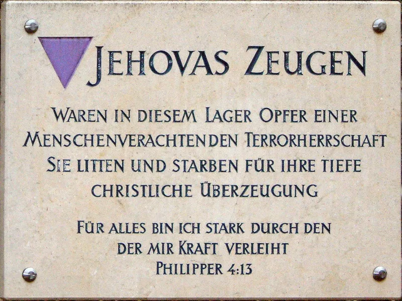
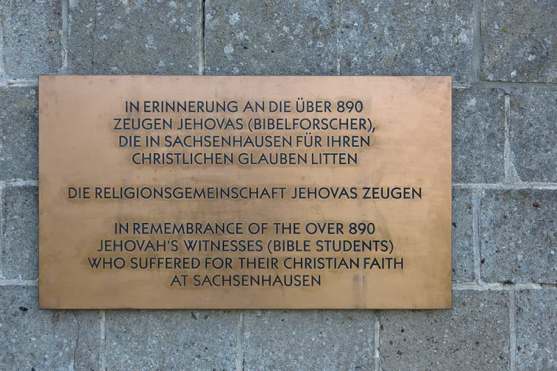

The Witness answer holds up. Do not lead with this one.
"They're just a cult, there's nothing to respect about them." It usually comes out as a warm-up to a point about 1914 or blood. It is not only rude.
It is false, and the Witness in front of you knows the history far better than you do.
They were the one group held for a belief they could drop at any moment. A signature on a form would have freed them.
Roughly 10,000 were jailed. Around 1,500 died.
About 250 were put to death for refusing to serve in the army. They wore the purple triangle in the camps.
Survivors, Jewish survivors among them, describe them as the least likely to inform and the most likely to share food.
Between 1938 and 1955 they took more than fifty cases to the Supreme Court. What they won belongs to everyone.
West Virginia v. Barnette (1943) held that no American can be made to salute a flag, or to state a belief.
Cantwell v. Connecticut (1940) applied the free exercise of faith to the states.
Much of the religious freedom every US church leans on was bought by Jehovah's Witnesses in court.
Russia banned them as extremist in 2017. Members have been jailed there ever since.
A Witness has heard this story since childhood. It is part of how the group proves to members that opposition means truth.
Say it yourself, first, and mean it. Then that defense has nowhere to go.
Then note the line that does the work. Willingness to suffer proves sincerity.
Nobody disputes their sincerity. It does not prove the doctrine, and the doctrine is the question.
Every martyr in history was sincere. The Beroeans were praised for checking the message anyway (Acts 17:11).
"Before anything else: what your people did under Hitler, and what you won at the Supreme Court, I respect completely."


The record is real: 1,500 died in the camps and fifty Supreme Court cases followed.
This one is not merely rude. It is false, and a Witness knows the history far better than the person using it.
Under the Third Reich, Jehovah's Witnesses were the one group held purely for a belief. They could have walked free at any moment by signing a form. Roughly 10,000 were imprisoned. Around 1,500 died. About 250 were put to death for refusing to serve in the army. They wore the purple triangle in the camps. Survivors, Jewish survivors among them, describe them as the least likely to inform and the most likely to share food.
In the United States they took more than fifty cases to the Supreme Court, between 1938 and 1955. What they won belongs to everyone. West Virginia v. Barnette (1943) held that no American can be made to salute a flag, or to state a belief. Cantwell v. Connecticut (1940) applied the Free Exercise Clause to the states. Much of the religious freedom every US church leans on was bought by Jehovah's Witnesses in court.
Russia banned them as extremist in 2017, and has jailed members since. So the persecution is not only history.
Do not use this one. Say the opposite first, and mean it.
Avoid this, because it is false, and because it destroys your standing in one sentence. The courage is real. The legal legacy is real. And a Witness has heard it since childhood, because it is part of how the organization proves to members that opposition equals truth.
Saying it first, unprompted and with genuine respect, does the opposite. It takes the persecution narrative off the table as a defense mechanism. That makes room for the actual questions.
Note the distinction that does the work. Their willingness to suffer proves sincerity, which nobody disputes. It does not prove the doctrine, which is what is in question. Every martyr in history was sincere, and the Bereans were commended for checking the message anyway (Acts 17:11).